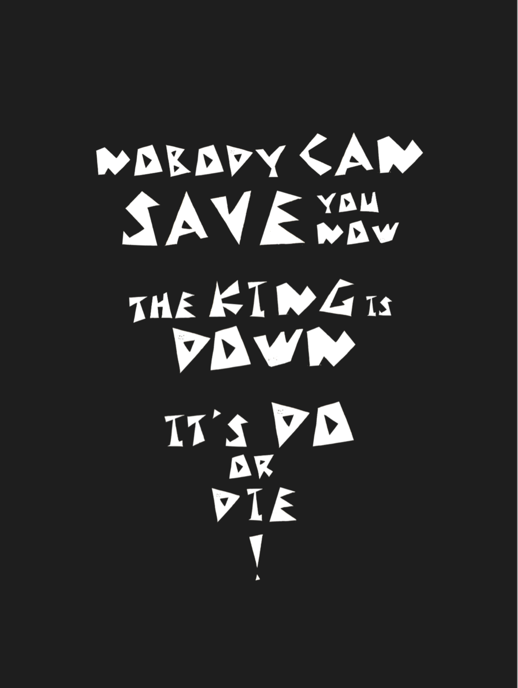
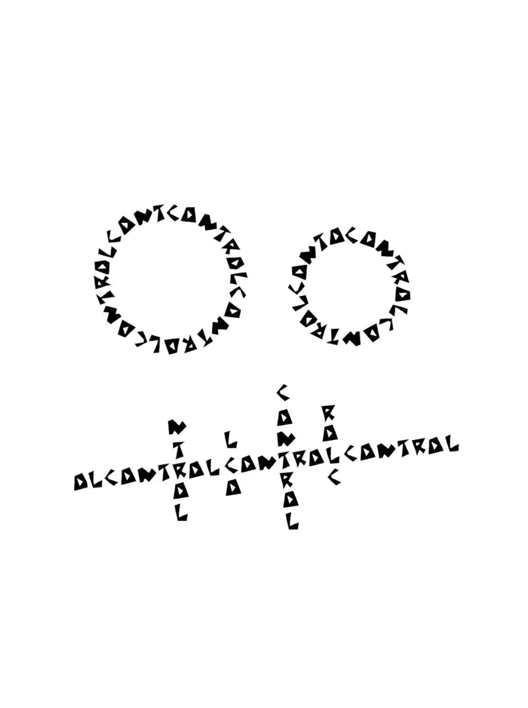
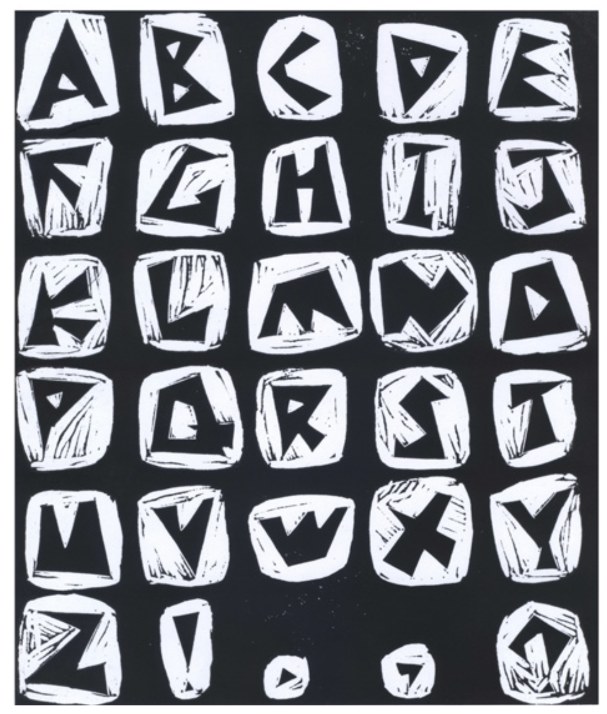
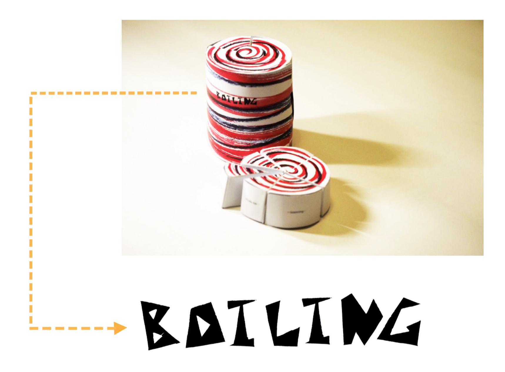

Triangle is a typeface I designed during UCLA Design Media Arts summer session. I got the idea of creating TRIANGLE typeface from a flyer I designed at school. I like the geometric shape of the triangle, because it gives me a sense of stability and power.






© 2020 Jiayu Luo.